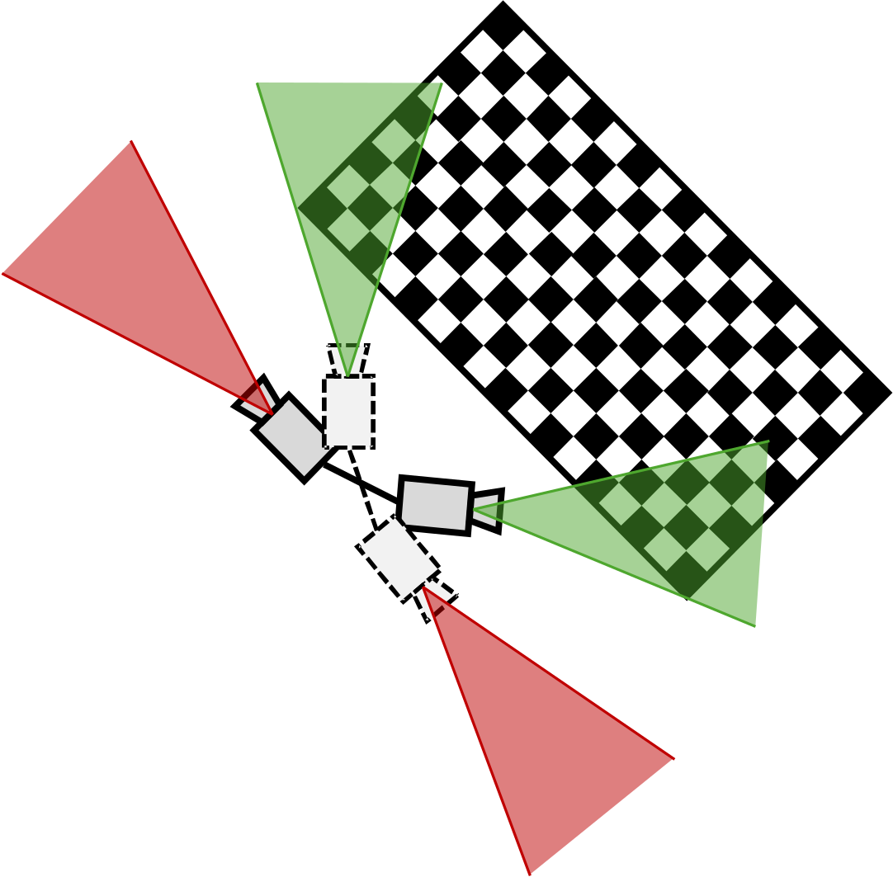
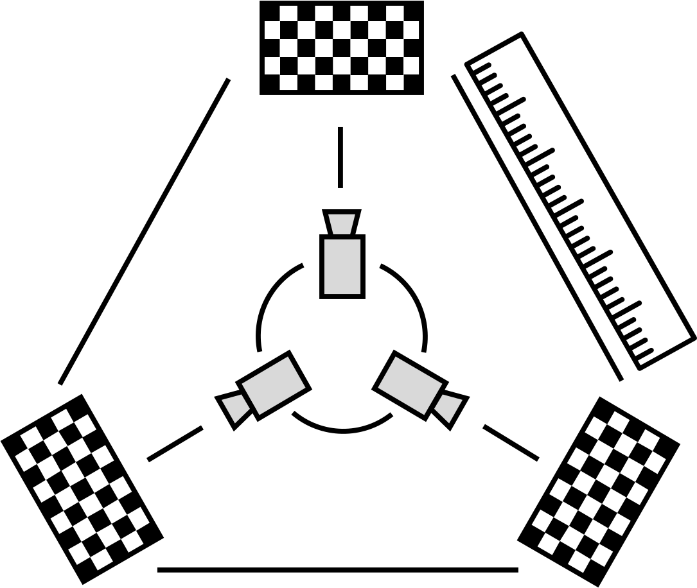
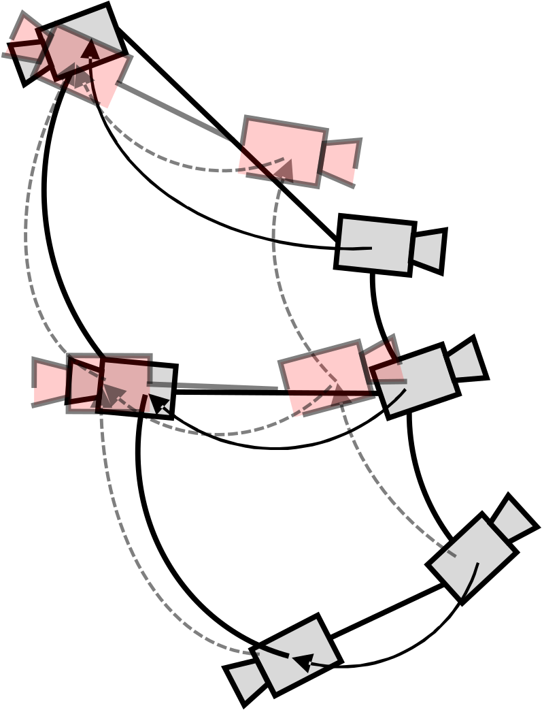
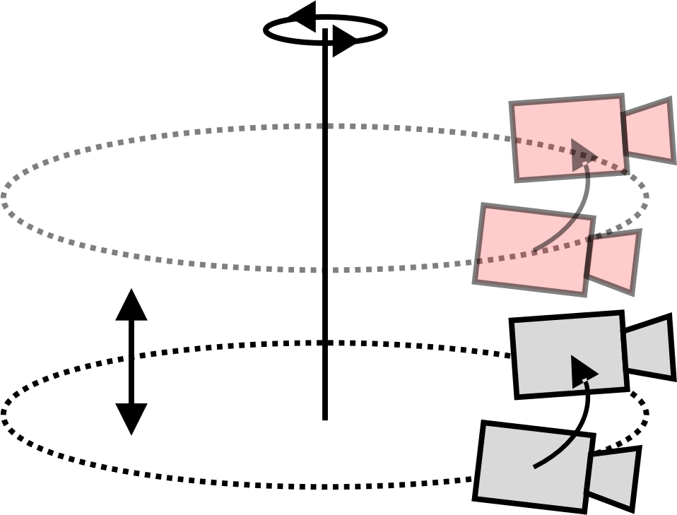
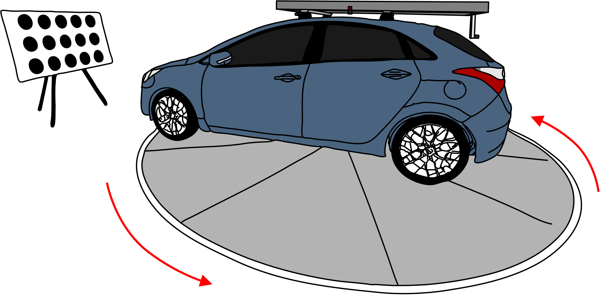
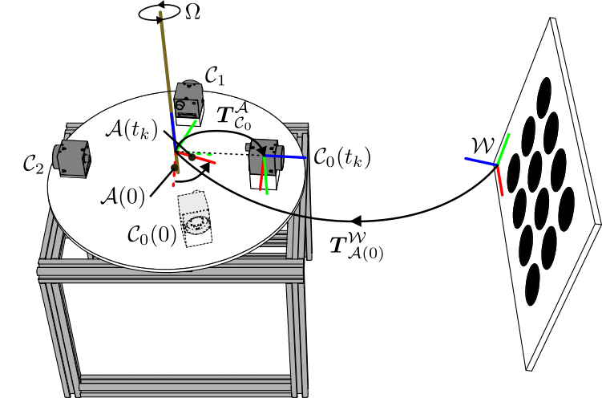
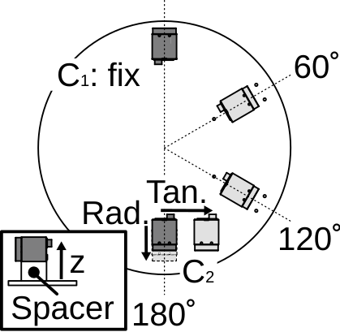
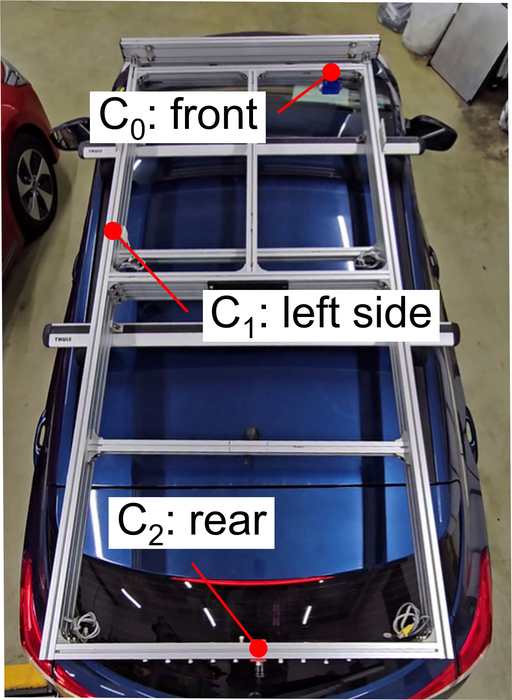
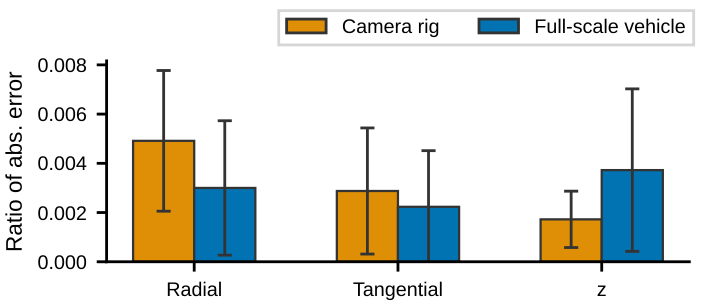

We present Calousel, a practical extrinsic calibration framework for non-overlapping multi-camera systems. Calousel uses pure rotational motion from a single-axis turntable and requires only a single static calibration board. The key idea is to let all cameras sequentially observe the same target under a shared geometric reference, even without overlapping FOV. We integrate these time-separated observations using a latent turntable frame and a 3D error on SE(3) within a global optimization framework. We validate Calousel on both a controlled camera rig and a full-scale vehicle platform with heterogeneous cameras, demonstrating stable performance under realistic sensing conditions and turntable imperfections.
Calousel does not rely on direct inter-camera correspondences.
All cameras sequentially observe the same calibration board.
A single-axis turntable induces pure rotational motion in a compact setup.
A latent turntable frame integrates time-separated observations.





Calousel models the rotating platform through a latent turntable frame. Although cameras observe the calibration board at different time instants, their observations are connected by the same pure rotational motion.

The latent turntable frame separates the time-varying turntable rotation from the time-invariant camera mounting geometry.
Each camera observes the calibration board at different time intervals. We estimate camera-to-board poses and select reliable keyframes with associated covariance.
Using the pure-rotation motion model, we initialize the angular velocity, turntable origin, and camera mounting poses from geometric constraints.
We jointly refine all parameters using a latent turntable frame and a 3D pose error on SE(3).
We evaluate Calousel on two platforms: a controlled robotic camera rig for quantitative analysis and a full-scale vehicle platform for assessing real-world scalability.
The robotic camera rig provides a controlled benchtop setup for quantitative evaluation. It consists of two FLIR Blackfly S cameras mounted on a reconfigurable rig, enabling angular and translational sweeps under non-overlapping FOV configurations. A stepper-motor turntable rotates the rig in front of a single static calibration board.


We use the full-scale vehicle platform to evaluate Calousel at vehicle scale. The vehicle is equipped with heterogeneous cameras, including FLIR cameras and a RealSense D435i rolling-shutter camera, mounted on a roof rack with non-overlapping views. The platform is rotated on an automotive turntable to validate Calousel under vehicle-scale geometry.


| Item | Robotic camera rig | Full-scale vehicle |
|---|---|---|
| # Cameras | 2 | 3 |
| Camera types | 2x FLIR Blackfly S | 2x FLIR Blackfly S 1x RealSense D435i [RS] |
| Resolution | 1440 x 1080 (FLIR) | 1440 x 1080 (FLIR) 1080 x 720 (D435i) |
| FPS | 60 | 30 |
| Turntable type | Stepper-motor turntable | Automotive turntable |
| Board config. | 4 x 3 r = 0.035 m, d = 0.09 m |
5 x 3 r = 0.1 m, d = 0.3 m |
[RS] indicates a rolling-shutter sensor.
RRE < 2.0°
RTE < 2.0 mm
RRE 0.9°-1.5°
RTE 5.6-11.7 mm
≤ 0.1° rotation diff.
≤ 0.3 mm translation diff.
On the controlled camera rig, Calousel maintains stable accuracy across non-overlapping camera configurations, with an average RRE of 1.7° and an average RTE of 1.8 mm.
| Rotation components | Translation components | ||||||||||||
|---|---|---|---|---|---|---|---|---|---|---|---|---|---|
| GT | Measured | RRE | Displacement GT | Measured Displacement | RTE | ||||||||
| Roll | Pitch | Yaw | Roll | Pitch | Yaw | Rad. | Tan. | z | Rad. | Tan. | z | ||
| 0 | 0 | 60 | 0.7±0.4 | 0.3±0.2 | 60.3±0.2 | 0.9±0.2 | -20 | 0 | 0 | -21.0±1.2 | -0.2±1.1 | -0.4±0.5 | 2.0±0.2 |
| 0 | 0 | 120 | 0.9±0.2 | 1.2±0.2 | 120.0±0.2 | 1.5±0.3 | 0 | 50 | 0 | 0.3±1.3 | 50.5±0.3 | 0.2±0.6 | 1.5±0.6 |
| 0 | 0 | 180 | -0.1±0.2 | 1.8±0.5 | 179.8±0.5 | 1.9±0.5 | 0 | 0 | 10 | 0.8±1.5 | -0.2±1.2 | 9.9±0.5 | 1.8±1.1 |
Units are mm for translation and deg for rotation.
On the full-scale vehicle, Calousel preserves rotation accuracy at vehicle scale. Absolute translation errors increase due to the larger platform geometry, motivating the normalized comparison below.
| Cam. | Rotation components | Translation components | ||||||||||||
|---|---|---|---|---|---|---|---|---|---|---|---|---|---|---|
| GT | Measured | RRE | Displacement GT | Measured Displacement | RTE | |||||||||
| Roll | Pitch | Yaw | Roll | Pitch | Yaw | Rad. | Tan. | z | Rad. | Tan. | z | |||
| C2 | 0 | 0 | 60 | 0.5 | 0.7 | 59.8 | 0.9 | 0 | 0 | 0 | 1.1 | 0.6 | 4.2 | 8.3 |
| 0 | 0 | 90 | 0.3 | 0.1 | 90.6 | 1.0 | 0 | 150 | 0 | 4.0 | 151.5 | 3.6 | 5.6 | |
| C3 | 0 | 0 | 180 | -0.2 | -0.5 | 179.1 | 1.5 | 0 | 0 | 0 | 1.8 | -0.8 | 2.1 | 7.7 |
| - | - | - | - | - | - | - | 0 | 150 | 0 | 0.9 | 145.9 | 5.2 | 7.8 | |
| - | - | - | - | - | - | - | 0 | 0 | -100 | 0.6 | 0.0 | -107.8 | 11.7 | |
Units are mm for translation and deg for rotation. C2 and C3 are reported relative to C1.
To account for platform scale, we normalize each translation error by the corresponding inter-camera distance. Under this normalized metric, the camera rig and full-scale vehicle exhibit comparable component-wise error ratios.

In overlapping-FOV stereo configurations, Calousel produces estimates that closely match a conventional target-based calibration method, while retaining the ability to handle non-overlapping configurations.
| Setting | Target-based | Ours | Diff. norm | |
|---|---|---|---|---|
| Stereo-A | Rot. | (-0.24, -0.33, 0.61) | (-0.24, -0.33, 0.57) | 0.06 |
| Trans. | (98.76, 1.18, -0.82) | (98.96, 1.27, -0.88) | 0.23 | |
| Stereo-B | Rot. | (0.11, 0.63, -0.01) | (0.11, 0.63, -0.04) | 0.03 |
| Trans. | (98.30, -10.21, -1.46) | (98.35, -10.21, -1.50) | 0.07 |
Units are mm for translation and deg for rotation.
Because prior methods use different sensor setups and calibration environments, these numbers should be interpreted as contextual references rather than a direct benchmark. Calousel provides competitive accuracy while avoiding large target setups, pre-measured target poses, or additional cameras.
| Methods | Rotational error | Translational error | |
|---|---|---|---|
| Target-based | Yin et al. (Remote Sens. 2018) | 0.06 | 0.08 |
| Liu et al. (Opt. Laser. Eng. 2011) | N/A | 0.01-0.08 | |
| Motion-based | Xu et al. (RA-L 2022) | 2.5 | 14 |
| Dai et al. (Sensors 2024) | 3.7 | 70.6 | |
| Additional-Camera | Robinson et al. (CAIP 2017) | 0.02-0.06 | 2-5 |
| Ours | 1.7 | 1.8 | |
Units are deg for rotation and mm for translation. N/A indicates not reported.
@INPROCEEDINGS { ghsong-2026-iros,
AUTHOR = { Gwanhyeong Song and Chaehyeon Song and Ayoung Kim },
TITLE = { Calousel: Extrinsic Calibration of Non-overlapping Multi-camera Systems from Pure Rotation },
BOOKTITLE = { IEEE/RSJ International Conference on Intelligent Robots and Systems (IROS) },
YEAR = { 2026 }
}This work is supported by the Korea Agency for Infrastructure Technology Advancement (KAIA) grant funded by the Ministry of Land, Infrastructure and Transport (Grant RS-2023-00250727) through the Korea Floating Infrastructure Research Center at Seoul National University.
This project builds on DiscoCal for accurate circular-pattern intrinsic calibration and board pose extraction. Please cite DiscoCal as appropriate if you use the intrinsic calibration component.